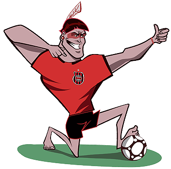

O escudo do GE Brasil foi desenvolvido por Paulo Viola, no final da década de 1930. O desenhista elaborou o distintivo para atender a um pedido do então presidente Xavante, Bento Mendes de Freitas. Originalmente o emblema continha no centro as letras GSB, de Grêmio Sportivo Brasil, o nome de fundação do clube. Só no início da década de 1940 o “Sportivo” foi aportuguesado para “Esportivo” e o “S” do distintivo rubro-negro foi substituído pelo “E”, ficando com a atual sigla: GEB.
Em dezembro de 2009, por uma iniciativa do Depto. de Marketing do Brasil, o brasão rubro-negro passou por uma sutil padronização técnica. Pequenas mudanças tornaram o escudo Xavante mais moderno e funcional, facilitando a aplicação dele nos mais diferentes produtos e peças institucionais e publicitárias.
Com a intenção de criar simetria e harmonia entre todas as formas do distintivo, todas as linhas e os traços foram alinhados, redimensionados e realocados nas devidas posições. Fazendo com que a leitura passasse a ser mais direta e o escudo, de uma maneira geral, ganhasse mais impacto e uma percepção mais atual, sem, contudo, abandonar os traços consagrados do símbolo rubro-negro.

Mascote
A escolha do Índio Xavante como mascote rubro-negra passa pela rivalidade do GE Brasil com o EC Pelotas. Aconteceu em 1946, no clássico BRA-PEL que decidira o título do Campeonato Citadino daquele ano. O time da Baixada, que jogava fora de casa, foi para o intervalo perdendo por 3 a 1 e com um jogador a menos em campo.
Na volta para a segunda etapa tudo parecia perdido. O técnico Teté, que comandava o Brasil naquele jogo, chegou até ameaçar tirar a equipe de campo. Mas os torcedores rubro-negros não deixaram. Pelo contrário, eles empurraram o time para uma virada histórica. A partida terminou num impressionante 5 a 3, em uma das mais suadas e emocionantes das tantas vitórias que o Brasil já conquistou sobre o rival da avenida.
Após o apito final, a torcida vencedora não se aguentou nas arquibancadas, atropelou o alambrado e invadiu o campo para comemorar. Vendo toda aquela euforia, quase que descontrolada, um dirigente áureo-cerúleo comparou a festa em vermelho e preto ao filme “Invasão dos Xavantes” (em cartaz naquela época), dizendo: “eles foram um bárbaros ao final do jogo, pareciam uns Xavantes”. Irreverente que é, a torcida rubro-negro ignorou o tom pejorativo da expressão e adotou a simpática e querida figura do Índio Xavante como mascote do Brasil.